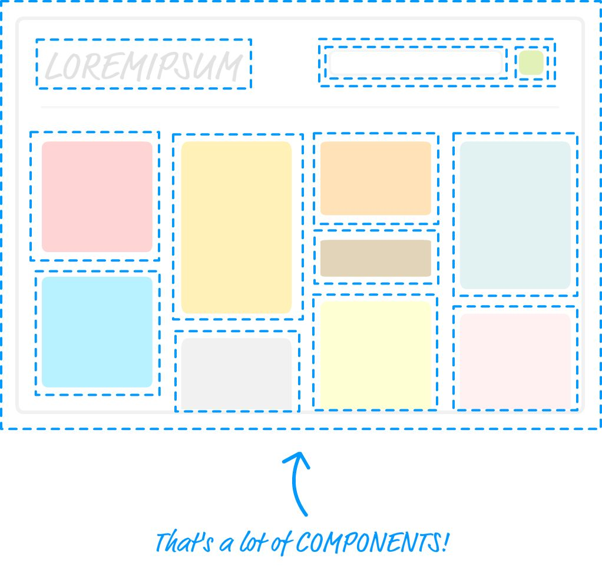
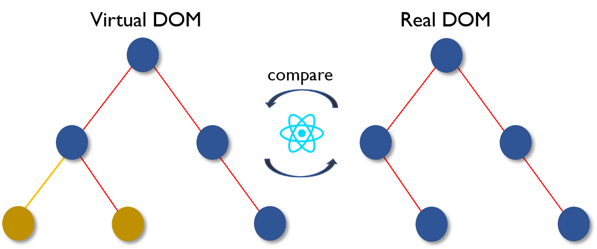

React
Short introduction
History
React was created by Jordan Walke

What Is React?
React is a declarative, efficient, and flexible JavaScript library for building user interfaces.
Declarative

- React makes it painless to create interactive UIs.
- Declarative views make code more predictable and easier to debug.
Few words about JSX
const element = <h1>Hello, world</h1>;
This funny tag syntax is neither a string nor HTML.
JSX, or JavaScript XML , is an extension to the JavaScript language syntax.
- Allows you to focus on building components, not templates
- Combining Markup and JavaScript reduces context switching
Virtual DOM

- Re-rendering the whole app on every update is not efficient
- The Virtual DOM will only update what is necessary
Flexible
You can use as little or as much React as you need
Conclusion
React is, in our opinion, the premier way to build big, fast Web apps with JavaScript.